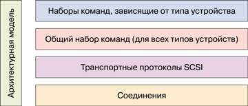
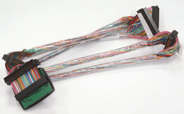
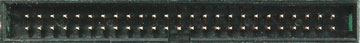
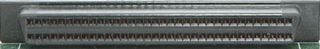
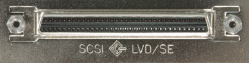

Олег Денисов, Алексей Батырь
За прошедшее со времени последнего нашего тестирования (см. "BYTE/Россия" No 11'2002) время (более полутора лет) изменения в сегменте жестких SCSI-дисков были не столь значительными, как в родственном сегменте IDE-дисков. Вдвое увеличилась максимальная плотность записи, соответственно возросла и максимальная емкость дисков - до 147 Гбайт. Внутренняя скорость передачи данных (между головками чтения/записи и интерфейсным блоком) выросла почти до 90 Мбайт/с. В большинстве моделей интерфейс Ultra160 SCSI уступил место вдвое более скоростному Ultra320 SCSI. И наконец, окончательно исчезли SCSI-модели со скоростями вращения ниже 10 тыс. об./мин.
Более медленные темпы развития SCSI-дисков по сравнению с IDE обусловлены тем, что для первых требуется обеспечивать значительно более высокие показатели надежности и готовности, необходимые серверным системам и сетевым системам хранения данных - а именно это главные области применения жестких SCSI-дисков.
Однако можно предположить, что в ближайшее время отрасль SCSI-дисков получит новый импульс и начнет развиваться более динамично. Связано это с появлением новых стандартов Ultra640 SCSI и Serial Attached SCSI (SAS), хотя последний благодаря физической совместимости с Serial ATA, как это ни парадоксально, может стать "убийцей" дисков с традиционным параллельным SCSI-интерфейсом.
Когда этот обзор готовился к печати, произошли два события, подтверждающие наше предположение о том, что на фронте SCSI-дисков ожидаются большие перемены. Компания Seagate выпустила первый и пока единственный в мире SCSI-диск Savvio форм-фактора 2,5 дюйм со скоростью 10 тыс. об./мин, а Fujitsu объявила о выпуске новых серий MAT (10 тыс. об./мин) и MAU (15 тыс. об./мин) с увеличившейся вдвое - до 75 Гбит/дюйм2 - поверхностной плотностью записи. Таким образом, теперь самый емкий в мире SCSI-диск - это 300-Гбайт MAT3300NC/NP, а самый емкий "пятнадцатитысячник" - 147-Гбайт MAU3147NC/NP.
Технологии
Накопитель на жестких магнитных дисках состоит из четырех главных элементов, каждый из которых вносит свой вклад в его характеристики: носителя (пакета дисковых пластин, вращающихся на одной оси), головок чтения/записи, позиционера (устройства, "наводящего" головки на нужную дорожку) и контроллера, обеспечивающего согласованное управление всеми элементами диска и передачу данных между ним и компьютером по одному из стандартных интерфейсов, в нашем случае - SCSI.
Несомненно, главный параметр любого жесткого диска - его емкость, т. е. количество байт данных, которое можно на него записать. Определяющие факторы для этого параметра - поверхностная плотность записи, размер и количество дисковых пластин. Поверхностная плотность определяется размером магнитных частиц покрытия пластин и величиной зазора головки чтения/записи.
Уменьшение размеров магнитных частиц давно уже дошло до стадии перманентной войны разработчиков с так называемым сверхпарамагнитным эффектом, заставляющим микроскопический магнитный домен самопроизвольно менять направление намагниченности за счет теплового движения молекул. Чтобы избежать этого эффекта, применяются специальные многослойные покрытия с антиферромагнитной связью (AFC) и так называемые синтетические ферримагнетики (SFM). Большое внимание уделяется и покрытиям, способным обеспечить вертикальную запись на носителях, обладающих магнитооптическими свойствами (в них применяются пленки на основе сплава тербия, железа и кобальта).
Не менее важную роль в повышении поверхностной плотности играет уменьшение размеров головки чтения/записи. Большинство изготовителей жестких дисков сейчас применяют головки чтения на основе супермагниторезистивного спинового клапана (GMR-SV), причем от головок, в которых ток протекает в плоскости головки (current-in-plane, CIP), переходят к таким, где ток протекает перпендикулярно плоскости головки (current-perpendicular-plane, CPP), и туннельным магниторезистивным (TMR) структурам.
Поперечная плотность записи, т. е. количество дорожек на единицу длины радиуса диска, увеличивается за счет повышения точности позиционирования головок (применяются двухступенчатые схемы позиционирования, в которых обычный позиционер на основе "звуковой катушки" служит для грубого позиционирования, а затем подвес головки точно "доводится" пьезоэлектрическим микроактуатором). На поперечную плотность записи влияют также нерегулярные боковые биения пластин, обусловленные неидеальностью подшипников шпиндельного двигателя. Чтобы избежать этого, применяют керамические подшипники, а в последнее время все большее распространение получают двигатели с гидродинамическими подшипниками (FDB, Fluid Dynamic Bearing), в которых вместо шариков используется специальное масло. Еще один фактор, ограничивающий поперечную плотность, - точность записи на диск сервоинформации. Она записывается на дисковые пластины специальным устройством на заключительном этапе изготовления накопителя.
Отметим, что увеличение количества дисковых пластин, а следовательно, и головок чтения/записи, во-первых, удорожает диск, а во-вторых, снижает его надежность. Поэтому изготовители современных жестких дисков стараются уменьшить число пластин до 2-4, а для изделий, требующих повышенной надежности, и до одной.
Второй по значимости параметр диска - внутренняя скорость передачи данных между головкой чтения/записи и поверхностью магнитных пластин (она отличается от внешней скорости, с которой данные передаются по интерфейсу между диском и компьютером). Внутренняя скорость, как и емкость, в первую очередь определяется поверхностной плотностью записи, а во вторую - скоростью вращения. Можно возразить, что скорость вращения оказывает большее влияние на скорость передачи, однако скорости вращения растут намного медленнее, чем плотность записи. Каждый шаг в этом направлении сопряжен с массой проблем, связанных с тем, что повышаются потребление мощности, тепловыделение, шумы; возникает необходимость в увеличении механической прочности пластин, разработке новых двигателей и т. п. В то же время скорость передачи при переходе от 10 к 15 тыс. об./мин увеличивается всего на 50%, в то время как увеличение плотности записи в два раза поднимает скорость тоже вдвое. Тем не менее диски на 15 тыс. об./мин, бывшие сравнительно недавно экзотической новинкой, прочно заняли свое место в линейках продукции всех изготовителей SCSI-дисков.
Третий важный параметр любого жесткого диска - время доступа к данным. Оно определяется скоростью перемещения позиционера и расстоянием, которое ему приходится проходить (и следовательно, диаметром дисковых пластин), а также латентностью, т. е. средним временем появления нужного сектора под головкой после ее выхода на заданную дорожку. Латентность, которая считается равной времени полуоборота диска, напрямую зависит от скорости вращения и для современных дисков, вращающихся со скоростями 10 и 15 тыс. об./мин, составляет соответственно 3 и 2 мс. Полное среднее время доступа для современных SCSI-дисков высшего класса снизилось до 3-4 мс.
Четвертый параметр - объем буферной памяти (кэш-буфера) накопителя. Увеличение объема буфера позволяет увеличить внешнюю скорость передачи благодаря использованию специальных алгоритмов кэширования, в первую очередь так называемого упреждающего чтения (это предполагает чтение в буфер не только заданного сектора, но и последующих секторов дорожки, с тем чтобы дальнейшая выборка данных происходила из буфера). В подавляющем большинстве современных SCSI-дисков объем кэш-буфера составляет 8 Мбайт.
Для серверных дисков один из важнейших параметров - надежность. Мы уже упоминали такой радикальный путь повышения надежности, как уменьшение числа пластин и соответственно головок. Кроме того, изготовители принимают меры для повышения надежности, оснащая контроллер диска специальными средствами самодиагностики, обнаружения ошибок, "скрытия" дефектных секторов и т. п. Такие технологии, как S.M.A.R.T, позволяют заблаговременно прогнозировать отказ диска. Применяемая IBM технология парковки головок вне дисковых пластин повышает ударостойкость накопителя и заметно увеличивает количество допустимых циклов его включения/выключения, поскольку полностью исключает прямой контакт головок с пластинами в процессе раскручивания или остановки шпиндельного двигателя. Seagate благодаря применению комплексной технологии защиты 3D Defense System и других технологических ухищрений удалось поднять наработку на отказ своих накопителей до фантастической величины 1,2 млн ч.
Внешняя скорость передачи определяется в первую очередь пропускной способностью интерфейса накопителя. Ясно, что пропускная способность интерфейса должна быть по крайней мере не меньше внутренней скорости передачи данных с учетом кэширования в буферной памяти. Учитывая, что максимальная внутренняя скорость передачи у современных дисков приблизилась к 100 Мбайт/с, решить эту задачу даже с помощью интерфейса Ultra320 SCSI (пропускная способность до 320 Мбайт/с) в многодисковой системе не так-то просто.
Интерфейсы
Если не считать 2,5-дюйм АТА-дисков, используемых в серверах-лезвиях с высокой плотностью компоновки, интерфейс SCSI, существующий уже более 20 лет, остается основным для дисков, предназначенных для высокопроизводительных серверов и сетевых систем хранения данных, которые выполняют одновременно множество разнородных задач и оснащены большим количеством жестких дисков, нередко объединенных в RAID-массивы.
Немного истории
История интерфейса, известного нам ныне как SCSI, восходит к 1979 г., когда компания Shugart Associates, возглавляемая Аланом Шугартом (он был одним из ведущих разработчиков флоппи-диска, а впоследствии основал компанию Seagate Technologies), разработала интерфейс SASI (Shugart Associates Systems Interface). Он обладал низкой пропускной способностью (1,5 Мбайт/с) и очень ограниченным даже по сравнению с первой версией SCSI набором команд, но главное в другом - это была первая попытка создать стандартизованный программируемый интерфейс для взаимодействия малых компьютерных систем с периферийными устройствами, в первую очередь с устройствами внешней памяти.
В 1981 г. компаниям Shugart Associates и NCR удалось убедить Американский национальный институт стандартизации (ANSI) начать работу над "узаконивающим" SASI стандартом. В процессе этой работы в спецификации интерфейса было внесено множество изменений и дополнений, позволивших повысить его пропускную способность и расширить набор команд. На каком-то этапе изменилось и название - на SCSI (Small Computer System Interface); по всей вероятности, это было сделано для того, чтобы присутствие названия конкретной компании не наводило на мысль о "фирменности" интерфейса. Первый стандарт SCSI был опубликован в 1986 г., и с тех пор началась история непрерывного совершенствования этого интерфейса, продолжающаяся и по сей день.
В развитии стандартов SCSI можно выделить три больших этапа, последний из которых еще очень далек от завершения.
SCSI-1
Стандарт, определявший основные характеристики первых шин SCSI, в том числе допустимые длины кабелей, параметры электрических сигналов, набор команд и режимы обмена. Этот крайне примитивный по нынешним меркам стандарт задавал лишь наиболее фундаментальные функции SCSI. Соответствовавшие ему устройства могли передавать данные только по "узкой", т. е. 8-разрядной шине с максимальной скоростью 5 Мбайт/с. Данные передавались по одиночным проводам, использовалась только пассивная оконечная нагрузка.
Одной из наиболее серьезных проблем, тормозивших повсеместное внедрение стандарта, было отсутствие в нем требования реализации полного набора команд. В итоге получалось так, что разные изготовители реализовали свои, нередко несовместимые, подмножества этого набора.
Стандарт SCSI-1 достаточно давно отозван ANSI и вызывает сейчас не более чем исторический интерес. Однако отвечающие ему устройства при соблюдении определенных условий могут работать с хост-адаптерами SCSI-2 и 3, правда, при этом скорость обмена не будет превышать 5 Мбайт/с.
SCSI-2
В 1985 г., за год до официального утверждения стандарта SCSI-1, началась работа над спецификацией SCSI-2. Целью этого было повысить пропускную способность и надежность интерфейса, расширить его возможности. Но главная цель заключалась в том, чтобы формализовать и должным образом стандартизовать набор команд. Так появился набор стандартных команд для жестких дисков SCSI, который получил название Common Command Set (CCS) и лег в основу стандарта SCSI-2, утвержденного ANSI в 1994 г.
Кроме CCS, в SCSI-2 были введены несколько важных расширений SCSI-1.
Fast SCSI. Тактовая частота шины увеличивалась до 10 МГц, что позволяло поднять скорость передачи до 10 Мбайт/с при ширине шины 8 бит и до 20 Мбайт/с при ширине 16 бит.
Wide SCSI. Ширину SCSI-шины допускалось увеличивать до 16 или даже 32 бит. Это означало удвоение или учетверение скорости передачи при той же частоте шины. На практике 32-разрядная шина почти никогда не использовалась.
Большее допустимое число устройств на шине. Допускалось подключение к одной шине до 16 (вместо прежних 8) устройств.
Новые кабели и разъемы. Допускалось использование улучшенных кабелей и разъемов с более высокой плотностью контактов (по сравнению со стандартными 50-контактными).
Активные оконечные устройства. Наряду с пассивной оконечной нагрузкой (терминатором), предусмотренной стандартом SCSI-1, допускалось использование более надежного активного окончания.
Дифференциальные линии передачи сигналов. Для увеличения допустимой длины кабелей предлагалось вместо обычного однопроводного (Single Ended, SE) использовать дифференциальный метод передачи сигналов. Впоследствии он получил название "высоковольтного дифференциального" (High Voltage Differential, HVD) в отличие от широко распространившегося позднее "низковольтного" (Low Voltage Differential, LVD).
Очереди команд. Одно из серьезных преимуществ SCSI - возможность одновременного выполнения нескольких не противоречащих друг другу запросов от различных устройств на шине. В отличие от способа выполнения запросов в SCSI-1, когда устройство, получив запрос, должно выполнить его прежде, чем переходить к следующему, в SCSI-2 предусматривалась возможность запоминания устройством до 64 или даже до 256 запросов и последующего их выполнения, причем не обязательно в порядке поступления. Эти возможности получили название Command Queuing and Reordering или Tagged Command Queuing.
Новые наборы команд. В SCSI-2 были добавлены наборы команд для работы не только с жесткими дисками, но и с такими устройствами, как накопители CD-ROM, сканеры и библиотеки с автоматической сменой носителей.
SCSI-3
Работа над очередной версией стандарта SCSI, получившей название SCSI-3, началась в 1993 г., за год до официального утверждения SCSI-2. К этому времени (за восемь лет работы) документ, описывающий SCSI-2, разросся до непомерных размеров. Перед лицом огромного количества новых технологий, транспортных протоколов, наборов команд и т. п., которые необходимо было добавить в следующую версию, разработчики стандарта приняли единственно правильное решение: отказаться от единого документа и создать комплекс взаимосвязанных стандартов, охватывающий все аспекты функционирования интерфейса для различных типов периферийных устройств, с различными способами передачи сигнала, транспортными уровнями и т. д. Объединять все эти многочисленные стандарты должна была специальная структура, названная архитектурой SCSI-3. Описывающий ее документ называется архитектурной моделью SCSI (SCSI Architecture Model, SAM). Первая его версия была утверждена ANSI в 1996 г. Сейчас в работе третья версия - SAM-3. Она утверждает структуру комплекса стандартов SCSI, показанную на рис. 1.
|  | Рис. 1. Структура стандартов SCSI.
|
Архитектурная модель определяет модель функционирования SCSI-систем, функциональное разделение совокупности стандартов SCSI и общие для всех реализаций SCSI требования.
Наборы команд, зависящие от типа устройства. Стандарты на реализации, определяющие конкретные типы устройств, включая модель устройства для каждого типа. Эти стандарты задают необходимые команды и поведение, характерное для данного типа устройств.
Общий набор команд. Стандарт на реализации, определяющий модель для всех типов SCSI-устройств. Он перечисляет команды и поведение, общие для всех устройств независимо от их типа.
Транспортные протоколы SCSI. Стандарты, определяющие требования к способам обмена информацией, которые позволяют взаимодействовать различным SCSI-устройствам.
Соединения. Стандарты, определяющие механизмы связи, используемые транспортными протоколами SCSI. Они описывают электрические и временны'е параметры сигналов, которые необходимы для взаимодействия SCSI-устройств, подключенных с помощью соединения определенного типа.
Набор существующих на сегодня стандартов SCSI-3 по категориям представлен в табл. 1. Даже беглого взгляда на нее достаточно, чтобы оценить многообразие реализаций того, что скрывается сегодня под скромным именем SCSI.
Таблица 1. Стандарты SCSI-3 по категориям
| Полное название | Сокращенное название | Номер стандарта | Год принятия |
| Архитектурная модель | |||
| SCSI-3 Architecture Model | SAM | ISO/IEC 14776-411 | 1996 |
| SCSI Architecture Model-2 | SAM-2 | ISO/IEC 14776-412 | 2003 |
| SCSI Architecture Model-3 | SAM-3 | ISO/IEC 14776-413 | Проект |
| Наборы команд, зависящие от типа устройства | |||
| SCSI-3 Block Commands (команды для устройств с произвольным доступом, обменивающихся блоками данных, в частности, жестких дисков) | SBC | ISO/IEC 14776-321 | 1998 |
| SCSI Block Commands-2 | SBC-2 | ISO/IEC 14776-322 | Проект |
| SCSI Reduced Block Commands (сокращенный набор блоковых команд) | RBC | ISO/IEC 14776-326 | 2000 |
| SCSI-3 Stream Commands (команды для устройств последовательного доступа с потоковой передачей данных, например, магнитных лент) | SSC | ISO/IEC 14776-331 | 2000 |
| SCSI Stream Commands-2 | SSC-2 | ISO/IEC 14776-332 | 2003 |
| SCSI Stream Commands-3 | SSC-3 | ISO/IEC 14776-333 | Проект |
| SCSI-3 Medium Changer Commands (команды для устройств с автоматической сменой носителей, например, ленточных библиотек) | SMC | ISO/IEC 14776-351 | 1998 |
| SCSI Media Changer Commands-2 | SMC-2 | ISO/IEC 14776-352 | Проект |
| SCSI-3 Multimedia Command Set (набор мультимедиа-команд) | MMC | ANSI X3.304 | 1997 |
| SCSI Multimedia Command Set-2 | MMC-2 | ISO/IEC 14776-362 | 2000 |
| SCSI Multimedia Command Set-3 | MMC-3 | ISO/IEC 14776-363 | 2002 |
| SCSI Multimedia Command Set-4 | MMC-4 | ISO/IEC 14776-364 | Проект |
| SCSI Multimedia Command Set-5 | MMC-5 | ISO/IEC 14776-365 | Проект |
| SCSI Controller Commands-2 (команды для RAID-контроллеров) | SCC-2 | ISO/IEC 14776-342 | 1998 |
| SCSI-3 Enclosure Services Commands (команды управления корпусами для SCSI-устройств) | SES | ISO/IEC 14776-371 | 1998 |
| SCSI Enclosure Services Commands-2 | SES-2 | ISO/IEC 14776-372 | Проект |
| SCSI Specification for Optical Card Reader/Writer (команды для устройств считывания оптических карт) | OCRW | ISO/IEC 14776-381 | Проект |
| Object-based Storage Devices Commands (команды для объектно-ориентированных устройств хранения данных) | OSD | ISO/IEC 14776-391 | Проект |
| SCSI Management Server Commands (команды для сервера управления) | MSC | ISO/IEC 14776-511 | Проект |
| Automation/Drive Interface Commands (команды взаимодействия между библиотеками с автоматической сменой носителей и входящими в них накопителями) | ADC | ISO/IEC 14776-356 | Проект |
| Общий набор команд (для всех типов устройств) | |||
| SCSI-3 Primary Commands (первичные команды) | SPC | ANSI X3.301- | 1997 |
| SCSI Primary Commands-2 | SPC-2 | ISO/IEC 14776-452 | 2001 |
| SCSI Primary Commands-3 | SPC-3 | ISO/IEC 14776-453 | Проект |
| Транспортные протоколы SCSI | |||
| Automation/Drive Interface - Transport Protocol (транспортный протокол обмена между автоматическими библиотеками и входящими в них накопителями) | ADT | ISO/IEC 14776-191 | Проект |
| Serial Storage Architecture SCSI-3 Protocol (протокол последовательной архитектуры памяти SSA) | SSA-S3P | ANSI NCITS.309 | 1998 |
| Serial Storage Architecture Transport Layer 1 (транспортный уровень SSA) | SSA-TL-1 | ANSI X3.295 | 1996 |
| Serial Storage Architecture Transport Layer 2 | SSA-TL-2 | ANSI NCITS.308 | 1998 |
| SCSI-3 Fibre Channel Protocol (протокол Fibre Channel) | FCP | ISO/IEC 14776-221 | 1996 |
| SCSI Fibre Channel Protocol-2 | FCP-2 | ISO/IEC 14776-222 | 2003 |
| SCSI Fibre Channel Protocol-3 | FCP-3 | ISO/IEC 14776-223 | Проект |
| Serial Bus Protocol-2 (протокол обмена по шине IEEE 1394) | SBP-2 | ISO/IEC 14776-232 | 1999 |
| Serial Bus Protocol-3 | SBP-3 | ISO/IEC 14776-233 | Проект |
| SCSI RDMA Protocol (протокол удаленного прямого доступа к памяти для работы SCSI-устройств в архитектуре InfiniBand и других кластерных архитектурах) | SRP | ISO/IEC 14776-241 | Проект |
| SCSI RDMA Protocol-2 | SRP-2 | ISO/IEC 14776-242 | Проект |
| Соединения | |||
| Fibre Channel Arbitrated Loop-2 (петля Fibre Channel с арбитражем) | FC-AL-2 | ISO/IEC 14165-122 | 1999 |
| Fibre Channel Physical Interfaces (физические интерфейсы Fibre Channel) | FC-PI | ISO/IEC 14165-115 | 2002 |
| Fibre Channel Physical Interfaces-2 | FC-PI-2 | -- | Проект |
| Fibre Channel Framing and Signaling Interface (интерфейс кадрирования и сигнализации Fibre Channel) | FC-FS | ISO/IEC 14165-251 | 2003 |
| High Performance Serial Bus (высокопроизводительная последовательная шина IEEE 1394) | ANSI/IEEE 1394 | 1995 | |
| High Performance Serial Bus (дополнение к ANSI/IEEE 1394-1995) | ANSI/IEEE 1394a | 2000 | |
| SCSI Parallel Interface-2 (параллельный интерфейс SCSI) | SPI-2 | ISO/IEC 14776-112 | 1999 |
| SCSI Parallel Interface-3 | SPI-3 | ISO/IEC 14776-113 | 2000 |
| SCSI Parallel Interface-4 | SPI-4 | ISO/IEC 14776-114 | 2002 |
| SCSI Parallel Interface-5 | SPI-5 | ISO/IEC 14776-115 | 2003 |
| Serial Storage Architecture Physical Layer 1 (физический уровень SSA) | SSA-PH | ANSI X3.293 | 1996 |
| Serial Storage Architecture Physical Layer 2 | SSA-PH-2 | ANSI NCITS.307 | 1998 |
| Serial Attached SCSI | SAS | ISO/IEC 14776-150 | 2003 |
| Serial Attached SCSI-1.1 | SAS-1.1 | ISO/IEC 14776-151 | Проект |
SPI
Расширение области применения SCSI на ряд физических интерфейсов и протоколов потребовало отдельного стандарта на "собственно SCSI", т. е. передачу данных электрическими сигналами по параллельной шине. Этот интерфейс получил название SCSI-3 Parallel Interface (SPI). Первое его описание состояло из трех документов:
- SCSI-3 Interlocked Protocol (SIP) описывал протокол передачи по параллельной шине.
- SCSI-3 Parallel Interface (SPI) определял физический уровень интерфейса. В нем предусматривался впервые появившийся в SCSI-2 режим Fast SCSI с частотой шины, увеличенной до 10 МГц.
- Fast-20 представлял собой дополнение к предыдущему документу, описывающее 20-МГц сигнализацию, которая обеспечивает максимальную пропускную способность шины 40 Мбайт/с.
Интерфейс, описываемый этими тремя документами, называли также Ultra SCSI (20 Мбайт/с, 8-разрядная шина) и Ultra Wide SCSI (40 Мбайт/с, 16-разрядная шина).
Еще одной важной новинкой, появившейся в SPI, были новые 68-контактные кабели типа "P" и новые разъемы. Теперь для организации "широкой" (16-разрядной) шины не требовалось двух кабелей, как раньше.
SPI-2
Новый стандарт SPI-2 объединил все спецификации интерфейса, которые в SPI содержались в трех различных документах. Наиболее важные новые технологии и возможности, введенные этим стандартом, перечислены ниже.
Fast-40. Новое удвоение тактовой частоты шины SCSI - с 20 до 40 МГц - обеспечило возрастание максимальной пропускной способности до 40 Мбайт/с при "узкой" (8-разрядной) и до 80 Мбайт/с при "широкой" (16-разрядной) шине.
Низковольтные дифференциальные сигналы. SPI-2 ввел новый способ передачи сигналов - низковольтный дифференциальный (Low Voltage Differential, LVD). Этот способ быстро завоевал всеобщее признание, и во всех современных жестких дисках используется именно он.
Многорежимность. SPI-2 обеспечил создание многорежимных устройств, способных работать как на LVD-, так и на обычных однопроводных (SE) шинах. Такие устройства автоматически определяют тип шины и других подключенных к ней устройств и переходят в соответствующий режим работы. Надо отметить, что при этом возможны неприятности. Предположим, например, что к 4-метровому кабелю, соединяющему хост-адаптер Ultra160 LVD с многорежимным диском Ultra160, подключили однопроводное устройство Ultra Wide. При этом все остальные устройства автоматически переходят в однопроводной режим и пытаются работать на скорости Ultra (Fast-20), для которой длина кабеля превышает максимально допустимую в режиме SE (1,5 м) почти в три раза.
Новые разъемы прямого подключения SCA-2. В SPI-2 переработана спецификация разъемов прямого подключения (Single Connector Attachment, SCA). Эти разъемы содержат, помимо интерфейсных линий SCSI, все необходимые для работы жесткого диска питающие напряжения и имеют конструкцию, которая обеспечивает безопасную горячую замену дисков в RAID-массивах. Новые разъемы рассчитаны на шину LVD.
Разъемы сверхвысокой плотности. В SPI-2 определен уменьшенный вариант стандартного 68-контактного разъема с высокой плотностью контактов. Он получил название разъема сверхвысокой плотности (Very High Density Cable Interconnect, VHDCI).
Говоря об интерфейсе, соответствующем SPI-2, часто пользуются неформальными (маркетинговыми) терминами Ultra2 SCSI или Ultra2 Wide SCSI.
SPI-3
В этом документе была вновь удвоена скорость передачи и появился ряд новых возможностей.
Fast-80(DT). В ответ на растущие требования к пропускной способности шины SCSI она была вновь удвоена - до 160 Мбайт/с (на "широкой" шине). Это было достигнуто не удвоением тактовой частоты (она осталась равной 40 МГц), а за счет передачи данных по обоим фронтам тактового импульса (об этом напоминает аббревиатура DT - Double Transition - в названии).
CRC. Проверка с помощью циклического избыточного кода для обеспечения целостности данных при передаче с высокими скоростями.
Domain Validation (DV). Поскольку один из основных принципов построения интерфейса SCSI - обратная совместимость, т. е. возможность совместной работы более старых устройств с более новыми, требуется определенная процедура, позволяющая устройствам разных поколений "договориться" о том, на какой скорости они будут обмениваться данными. Однако даже если устройство сообщает хост-адаптеру Ultra160 о том, что оно соответствует этой спецификации, реальная передача данных на этой скорости может происходить с ошибками или вообще оказаться невозможной из-за проблем с кабелем, оконечной нагрузкой и т. п. Поэтому потребовался еще один этап - аттестация шины (в данном случае называемой доменом). После окончания переговоров хост-адаптер посылает данные на "обговоренной" скорости в буфер устройства, а затем считывает их оттуда, чтобы удостовериться, что передача прошла без ошибок. Если это не так, адаптер повторяет процедуру на меньшей скорости, и так до тех пор, пока не дойдет до скорости, на которой надежно происходит обмен с устройством.
Quick Arbitration and Selection (QAS). Наличие на шине SCSI нескольких устройств (до 8 на "узкой" и до 16 на "широкой") предполагает возможность возникновения между ними конфликтов за использование шины в каждый конкретный момент времени. Для разрешения таких конфликтов предусмотрен механизм арбитража, т. е. выбора одного из двух или нескольких устройств, одновременно подавших "заявки" на пользование шиной, в соответствии с приоритетами участвующих в состязании устройств. Механизм ускоренного арбитража и выбора (QAS) позволяет сократить "накладные расходы", связанные с арбитражем.
Пакетизация. В традиционном варианте интерфейса SCSI различные типы информации, составляющие один запрос на передачу данных (например, команды, данные, сообщения о состоянии и т. п.) пересылаются по отдельности, создавая дополнительную нагрузку на шину. Пакетизация позволяет сгруппировать их в пакеты, или информационные единицы (information units), и пересылать как единое целое.
SPI-4
Главное новшество, появившееся в стандарте SPI-4, - очередное удвоение скорости передачи. Новый режим Fast-160(DT) позволил довести ее (на "широкой" шине) до 320 Мбайт/с. Физическая тактовая частота шины возросла до 80 МГц, для тактирования могут использоваться один или оба фронта тактового сигнала.
SPI-5
Этот последний стандарт вновь удваивает максимальную пропускную способность шины SCSI - до 640 Мбайт/с. Максимальная тактовая частота шины составляет теперь 160 МГц, самый быстрый режим передачи - Fast-320(DT). В SPI-5 два самых скоростных режима (Fast-160 и Fast-320) используют так называемую принудительную передачу (paced transfer). Для этого служит специальный сигнал P1, определяющий достоверность данных на шине во время перехода сигналов REQ или ACK из одного состояния в другое. Для "тонкой подстройки" формирователей и приемников сигналов при работе на предельных частотах принимается ряд специальных мер.
Заметим, что серийных жестких дисков и хост-адаптеров с этим интерфейсом промышленность пока не выпускает.
Характеристики параллельных интерфейсов SCSI
В табл. 2 и 3 сведены основные характеристики различных вариантов параллельных интерфейсов SCSI, а также применяемых для них разъемов и кабелей. На рис. 2 и 3 показаны современный LVD-кабель, применяемый для подключения дисков с интерфейсом Ultra320 SCSI, и все основные виды SCSI-разъемов.
|  | Рис. 2. Современный внутренний LVD-кабель с терминатором.
|
|  |
|  |
|  |
| Рис. 3. Виды разъемов SCSI (сверху вниз: внутренний 2, внутренний 3, внешний 4; обозначения соответствуют номерам "альтернатив" из табл. 3).
|
Таблица 2. Основные характеристики параллельных интерфейсов SCSI
| Режим передачи | Стандарт | Ширина шины, бит | Частота шины, МГц | Пропуск-ная способ-ность, Мбайт/с | Специ-альные возмож-ности | Число контактов в кабеле | Способ передачи сигналов | Макс. число устройств на шине | Макс. длина кабеля, м |
| Обычный SCSI (SCSI-1) | SCSI-1 | 8 | 5 | 5 | 50 | SE HVD |
8 8 |
6 25 |
|
| Wide SCSI | SCSI-2 | 16 | 5 | 10 | 68 | SE HVD |
16 16 |
6 25 |
|
| Fast SCSI | SCSI-2 | 8 | 10 | 10 | 50 | SE HVD |
8 8 |
3 25 |
|
| Fast Wide SCSI | SCSI-2 | 16 | 10 | 20 | 68 | SE HVD |
16 16 |
3 25 |
|
| Ultra SCSI | SCSI-3/SPI | 8 | 20 | 20 | 50 | SE HVD |
8 4 8 |
1.5 3 25 |
|
| Ultra Wide SCSI | SCSI-3/SPI | 16 | 20 | 40 | 68 | SE HVD |
8 4 16 |
1.5 3 25 |
|
| Ultra2 SCSI | SCSI-3/SPI-2 | 8 | 40 | 40 | 50 | LVD HVD |
8 2 8 |
12 25 25 |
|
| Ultra2 Wide SCSI | SCSI-3/SPI-2 | 16 | 40 | 80 | 68 | LVD HVD |
16 2 16 |
12 25 25 |
|
| Ultra3 SCSI | SCSI-3/SPI-3 | 16 | 40 (DT) | 160 | По крайней мере одна из Fast-80, CRC, DV, QAS, Packet | 68 | LVD | 16 2 |
12 25 |
| Ultra160 SCSI | SCSI-3/SPI-3 | 16 | 40 (DT) | 160 | Fast-80, CRC, DV | 68 | LVD | 16 2 |
12 25 |
| Ultra160+ SCSI | SCSI-3/SPI-3 | 16 | 40 (DT) | 160 | Fast-80, CRC, DV, QAS, Packet | 68 | LVD | 16 2 |
12 25 |
| Ultra320 SCSI | SCSI-3/SPI-4 | 16 | 80 (DT) | 320 | Fast-160, CRC, DV, QAS, Packet | 68 | LVD | 16 2 |
12 25 |
| Ultra640 SCSI | SCSI-3/SPI-5 | 16 | 160 (DT) | 640 | Fast-320, CRC, DV, QAS, Packet | 68 | LVD | 16 2 |
12 25 |
Таблица 3. Варианты разъемов и кабелей SCSI
| Тип кабеля | "Альтернатива" разъема | Тип разъема | Число контактов | Название кабеля |
| Внешний | 1 | Высокой плотности | 50 | Внешний кабель "A" высокой плотности |
| 2 | Centronics | 50 | Внешний кабель "A" Centronics | |
| 3 | Высокой плотности | 68 | Внешний кабель "P" высокой плотности | |
| 4 | VHDCI | 68 | Внешний кабель "P" сверхвысокой плотности | |
| Внутренний | 1 | Высокой плотности | 50 | Внутренний кабель "A" высокой плотности |
| 2 | Обычной плотности | 50 | Внутренний кабель "A" обычной плотности | |
| 3 | Высокой плотности | 68 | Внутренний кабель "P" высокой плотности | |
| 4 | SCA, SCA-2 | 80 | Без кабеля |
FC-Al
Хотя подавляющее большинство серверных жестких дисков имеет параллельный интерфейс SCSI (в последних моделях это, как правило, Ultra320 SCSI), у всех изготовителей есть и варианты с интерфейсом Fibre Channel Arbitrated Loop (FC-AL) или пришедшим ему на смену FC-AL-2. Этот последовательный интерфейс первоначально был разработан для передачи данных по оптоволоконному кабелю, но затем адаптирован и для обычного медного кабеля.
Основным назначением Fibre Channel было создание сетей хранения данных (Storage Area Network, SAN) на основе сети коммутаторов (switching fabric), позволяющей организовать виртуальное соединение любого устройства хранения данных с любым другим подобным устройством или потребителем данных. Главное преимущество SAN на основе Fibre Channel заключается в том, что при использовании оптоволокна данные могут передаваться на расстояния до 10 км! Поэтому решения на основе Fibre Channel часто используются для организации катастрофоустойчивых сетей хранения данных, но они чрезвычайно дороги в реализации.
FC-AL представляет собой сравнительно дешевый вариант реализации SAN Fibre Channel, позволяющий обойтись без коммутаторов. Вместо них используется модель кольца с арбитражем, обеспечивающая подключение небольшого числа устройств, характерного для SCSI. Современные хост-адаптеры FC-AL-2 полностью "изолируют" интерфейсный уровень Fibre Channel от системы, в которой установлены. С точки зрения этой системы они выглядят как обычные контроллеры SPI, скажем, Ultra320 SCSI, что позволяет избежать дополнительных затрат на создание драйверов.
SAS
Наконец, самый последний "писк" SCSI-моды - последовательный интерфейс Serial Attached SCSI (SAS). Несмотря на крайнюю "молодость" (ему нет еще и трех лет), вышла уже вторая редакция проекта стандарта - SAS 1.1. Стандарт задает требования к физическому соединению SAS, идентичному шине Serial ATA (SATA), и определяет три транспортных протокола: Serial SCSI Protocol (SSP) для передачи SCSI-команд; Serial Management Protocol (SMP) для передачи вспомогательной информации, необходимой для управления интерфейсом; и Serial ATA Tunneled Protocol (STP) для передачи SATA-команд нескольким SATA-устройствам.
Интереснее всего здесь, конечно, последний протокол. Его появление знаменует немыслимое прежде сближение интерфейсов SCSI и ATA. Мало того, что они будут теперь использовать одно и то же физическое соединение, - SAS-контроллер сможет управлять SATA-дисками, причем, в отличие от принятой в SATA модели, когда один канал контроллера работает только с одним устройством, STP позволяет одному порту SAS-контроллера работать с несколькими SATA-устройствами. Таким образом, SATA становится практически частным случаем SAS.
Благодаря идентичности физического интерфейса SAS сможет работать на скорости как первой версии SATA (1,5 Мбит/с), так и SATA II (3 Мбит/с).
Отметим, что серийные контроллеры и диски с интерфейсом Serial Attached SCSI пока не выпускаются.
Тестирование
Мы получили на тестирование девять моделей SCSI-накопителей всех четырех компаний, выпускающих такие диски, - Fujitsu, Hitachi, Maxtor и Seagate. Из них семь имели скорость вращения 10 тыс. об./мин и четыре - 15 тыс. об./мин. Все диски были оснащены параллельным SCSI-интерфейсом, причем только в трех моделях использован Ultra160 SCSI, во всех остальных - Ultra320 SCSI. Все диски имели традиционный форм-фактор - 3,5 дюйм. Не участвовали в тестировании имеющиеся на рынке диски Hitachi семейств Ultrastar 15K73 (15 тыс. об./мин) и Ultrastar DK32EJ/DJ (10 тыс. об./мин). Мы также не стали включать в обзор диски Maxtor Atlas 10K III, поскольку представитель этой серии уже рассматривался в нашем обзоре 2002 г. Характеристики протестированных дисков приведены в табл. 4.
По внешнему виду и конструкции все современные жесткие диски одного форм-фактора очень похожи друг на друга, поэтому в отзывах о каждой модели мы будем говорить только о показанных в тестах производительности результатах, отличительных чертах и заложенных в накопители фирменных технологиях. Полные результаты тестирования можно найти здесь.
Методика тестированияДля измерения быстродействия дисковых накопителей мы применяли синтетические тесты из пакета HD Tach 2.70: тест на скорость последовательного чтения данных (регистрируется график зависимости скорости чтения данных от их расположения в логическом адресном пространстве носителя, рассчитываются средняя Read Speed Average, максимальная Read Speed Maximum и минимальная Read Speed Minimum скорости чтения), на скорость передачи данных по шине в burst-режиме (Read Burst Speed), на скорость последовательной записи (регистрируется график зависимости скорости записи данных от их расположения в логическом адресном пространстве, рассчитываются средняя Write Speed Average, максимальная Write Speed Maximum и минимальная Write Speed Minimum скорости записи), на скорость случайного доступа к данным (Random Access Time) и на загрузку процессора во время выполнения дисковых операций (CPU Utilization). Кроме того, мы проверяли быстродействие накопителей при помощи дисковых тестов из пакета PC Magazine WinBench 99 Version 2.0 (High-End Disk WinMark 99, Disk Access Time, Disk Transfer Rate). Для оценки производительности накопителей при работе в серверных системах с большим количеством одновременно поступающих запросов на ввод-вывод мы использовали тест Iometer-2003.12.16.win32. Все тесты выполнялись под управлением ОС Microsoft Windows XP Professional Build 2600 с Service Pack 1, файловой системой NTFS и Microsoft DirectX 9.0a в видеорежиме с разрешением 1024x768 и глубиной цвета 32 бит. Все испытания проводились на ПК, построенном на базе системной платы ASUS P4C800 Deluxe на наборе микросхем Intel 875P, в которую были установлены процессор Intel Pentium 4 3,0 ГГц с 800-МГц системной шиной и два 256-Мбайт модуля памяти DDR400 SDRAM производства Samsung, графической платы ASUS V9280S на наборе микросхем Nvidia GeForce4 Ti 4200-8X со 128-Мбайт видеопамятью, жесткого диска Seagate Barracuda ATA V ST3120023A емкостью 120 Гбайт и контроллера Ultra320 SCSI Adaptec SCSI Card 29320 (версия BIOS 4.10.1, версия драйвера 3.00). |
Диски со скоростью вращения 15 000 об./мин
Fujitsu MAS3367NP
Выпустив серию жестких дисков MAS3 NC/NP, компания Fujitsu подтвердила свои лидирующие позиции в отрасли. Серия состоит из трех моделей - емкостью 18, 37 и 73 Гбайт. Мы тестировали "среднюю", 37-Гбайт, модель. Она оказалась безоговорочным лидером почти во всех наших тестах, за исключением только теста High-End Disk WinMark, где этот диск немного уступил своему ближайшему "преследователю" - Maxtor 8C036L0. Чуть выше оказалась у него и стоимость 1 Гбайт емкости, но разница невелика - всего 3%. Зато эта модель лидирует по такому важному для энергоемких многодисковых серверных систем и систем памяти параметру, как потребляемая мощность.
Еще одно важное для серверного диска достоинство - хорошая способность "держать" многочисленные одновременные запросы ввода-вывода, выявившаяся по результатам теста Iometer.
Не приходится сомневаться, что Fujitsu MAS3367NP, удостоившийся знака "Выбор редакции BYTE/Россия", - это диск для тех, кто хочет получить от дисковой подсистемы своего сервера или рабочей станции наивысшую производительность.
Hitachi IC35L036UWPR15
Этот 37-Гбайт накопитель принадлежит к тому же семейству Ultrastar 36Z15 (состоящему из моделей всего двух емкостей), 18-Гбайт представителя которого мы тестировали полтора года назад. Неудивительно поэтому, что данной модели трудно было на равных конкурировать с более новыми дисками других изготовителей. Если учесть еще, что IC35L036UWPR15 имеет вдвое меньший, чем у конкурентов, объем кэш-буфера, становится понятным, почему он "вчистую" проиграл им все тесты. Внимательный читатель, вероятно, заметит, что этот диск имеет еще и вдвое более медленный интерфейс Ultra160 SCSI, однако на результатах наших тестов это сказаться не могло - пропускная способность даже этого интерфейса (160 Мбайт/с) в однодисковой системе значительно превосходит внутреннюю скорость передачи данных накопителя.
Это единственный из протестированных накопителей, в технических данных которого указывается, быть может, не столь уж важный для серверных дисков (которые рассчитаны на круглосуточную непрерывную работу), но все же полезный параметр, как гарантированное число циклов включения-выключения - 50 тыс.
Безоговорочным лидером в своем классе этот диск стал только по стоимости 1 Гбайт емкости. Учитывая традиционно высокую надежность разработанных подразделением систем хранения данных IBM дисков Hitachi, которая обеспечивается такими фирменными технологиями, как IBM Drive Fitness Test (диагностика состояния устройства), IBM Drive-TIP (мониторинг рабочей температуры накопителя) и IBM Load/Unload (парковка головок чтения/записи за пределами магнитных пластин), не стоит сбрасывать серию Ultrastar 36Z15 со счетов, если стоимость дисковой подсистемы играет для вас не последнюю роль.
Maxtor 8C036L0
Компания Maxtor называет диски серии Atlas 15K, в которой, кроме 8C036L0, есть еще модели емкостью 18 и 73 Гбайт, "самыми быстрыми жесткими дисками в мире". К сожалению, это утверждение не прошло проверки нашими испытаниями: в подавляющем большинстве тестов 8C036L0 уступил модели Fujitsu MAS3367NP, а в некоторых - и Seagate ST336753LW. Выиграл он только тест PC Magazine High-End Disk WinMark 99, причем и в некоторых из составляющих этот тест приложений диск Fujitsu показывал более высокие результаты.
Диски Atlas 15K оснащены интерфейсом Ultra320 SCSI второго поколения со средствами адаптивной активной фильтрации MaxAdapt, снижающими частоту битовых ошибок, облегчающими установку диска в существующие SCSI-системы и повышающими эффективность работы шины.
По стоимости 1 Гбайт емкости 8C036L0 опережает своих ближайших конкурентов Fujitsu и Seagate, но с минимальным отрывом - примерно 3%.
Seagate ST336753LW
Гепард (именно так переводится название серий SCSI-дисков Seagate) - очень быстрое и выносливое животное. Диски Cheetah уже много лет работают в огромном количестве серверов и рабочих станций, доказав, что по скорости и надежности вполне заслуживают столь гордое имя. Новая серия Cheetah 15K.3, состоящая из моделей 18, 37 и 73 Гбайт, не стала исключением. 37-Гбайт модель ST336753LW, участвовавшая в наших испытаниях, продемонстрировала превосходную производительность, уступив в тестах HD Tach лишь победителю - Fujitsu MAS3367NP. В других тестах диск выступил с переменным успехом, но результаты его были близки к результатам ближайшего соперника - Maxtor 8C036L0.
В серии Cheetah 15K.3 применяется система защиты накопителя 3D Defense System, состоящая из трех компонентов - Drive Defense, Data Defense и Diagnostic Defense. Корпус SeaShell надежно предохраняет диск от ударов. Технология SAMS (Seagate Advanced Multidrive System) повышает производительность диска при одновременной работе нескольких накопителей, а JIT (Just-In-Time) снижает выбросы по питанию, вибрацию и акустические шумы, связанные с быстрыми перемещениями позиционера.
Наконец, нельзя не упомянуть об очень высоком показателе надежности диска - его наработка на отказ составляет 1,2 млн ч.
Диски со скоростью вращения 10 000 об./мин
Fujitsu MAP3735NP
Жесткий диск Fujitsu MAP3735NP принадлежит к серии MAP3 NP, включающей, кроме него, модели емкостью 18, 37 и 147 Гбайт. В отличие от своего "пятнадцатитысячного" собрата из серии MAS3, ставшего победителем почти всех наших тестов, эта модель показала лучшие результаты только в тестах скорости последовательного чтения HD Tach и в некоторых приложениях теста PC Magazine Disk WinMark. Однако у этого диска есть немаловажное преимущество - самая низкая среди протестированных "десятитысячников" стоимость 1 Гбайт емкости.
Еще одно достоинство этой модели - низкая рабочая температура и минимальная потребляемая мощность, причем по последнему параметру она опережает многих конкурентов почти в два раза. Благодаря тому, что диск почти не нагревается во время работы, его можно успешно использовать в компьютерах и дисковых массивах без мощного охлаждения и с ограниченным свободным пространством.
Hitachi IC35L073UWDY10, IC35L146UWDY10
Мы протестировали две модели из семейства Hitachi Ultrastar 146Z10 - емкостью 73 и 147 Гбайт (кроме того, в нем есть модели 18 и 37 Гбайт). В этих накопителях используется несколько оригинальных технологий IBM, в том числе технологии низкоуровневого форматирования жестких дисков No-ID Sector Format, мониторинга температуры и защиты накопителя от перегрева Drive-TIP, диагностики состояния Drive Fitness Test и парковки головок чтения/записи Load/Unload.
По результатам тестов эти диски были на среднем уровне, ненамного отставая от лидеров. По стоимости 1 Гбайт емкости и потребляемой мощности, а следовательно, и тепловыделению, 73,4-Гбайт модель IC35L073UWDY10 составила серьезную конкуренцию лидирующему по этим характеристикам диску Fujitsu MAP3735NP. Самая же емкая модель серии, IC35L146UWDY10, при практически одинаковой с аналогичной моделью Seagate стоимости 1 Гбайт опережает ее по потребляемой мощности - правда, всего на 6%.
Maxtor 8B073L0
Этот накопитель принадлежит к серии Atlas 10K IV, содержащей также модели емкостью 37 и 147 Гбайт. Утверждение компании-изготовителя, что это "самый быстрый в мире диск на 10 тыс. об./мин", оказалось намного ближе к действительности, чем в отношении "пятнадцатитысячной" модели Maxtor 8C036L0. Этот жесткий диск показал лучшие результаты почти во всех тестах, уступив Seagate ST3146807LW только в тестах скорости чтения и записи HD Tach.
Диски Atlas 10K IV оснащены интерфейсом Ultra320 SCSI второго поколения со средствами адаптивной активной фильтрации MaxAdapt, снижающими частоту битовых ошибок, облегчающими установку диска в существующие SCSI-системы и повышающими эффективность работы шины. Лучший результат этого диска в тесте пакетного чтения, отражающем скорость работы интерфейсной части накопителя, отчасти подтверждает превосходство нового интерфейса Maxtor.
По стоимости 1 Гбайт емкости 8B073L0 отстает от 73-Гбайт конкурентов - моделей Fujitsu и Hitachi.
Seagate ST3146807LW
Этот накопитель - старшая модель серии Cheetah 10K.6, в которую входят также жесткие диски емкостью 37 и 73 Гбайт. По производительности он стал одним из лидеров наших испытаний, о чем свидетельствуют лучшие результаты в тестах последовательного чтения и записи HD Tach и вторые-третьи результаты в остальных тестах. Особо следует остановиться на результатах, показанных этим диском в тесте Iometer. Оставаясь "в тени" при малом количестве одновременно поступающих запросов на ввод-вывод, он заметно вырывается вперед при увеличении числа запросов, а значит, можно предположить, что, работая в нагруженном сервере с большим количеством одновременно поступающих запросов, этот накопитель покажет более высокую производительность, чем конкуренты. Учитывая все сказанное выше, мы решили отметить именно этот диск знаком отличия "Выбор редакции BYTE/Россия".
В серии Cheetah 10K.6 применяется система защиты накопителя 3D Defense System, состоящая из трех компонентов - Drive Defense, Data Defense и Diagnostic Defense. Корпус SeaShell надежно предохраняет диск от ударов. Технология SAMS (Seagate Advanced Multidrive System) повышает производительность диска при одновременной работе нескольких накопителей, а JIT (Just-In-Time) снижает выбросы по питанию, вибрацию и акустические шумы, связанные с быстрыми перемещениями позиционера. Наработка на отказ у этого накопителя, как и у "пятнадцатитысячного" собрата, составляет 1,2 млн ч.
Благодарности
Авторы статьи выражают особую признательность компании "Пирит" (тел. (095) 785-5554, 974-3210, http://www.pirit.ru), за оборудование, предоставленное для проведения тестирования.
Жесткие диски для подготовки обзора были предоставлены компаниями Asbis (http://www.asbis.ru), East Side Consulting, Millenium Distribution (http://www.mdgroup.ru), "Пирит" (http://www.pirit.ru), "Сетевая Лаборатория" (http://www.netlab.ru).